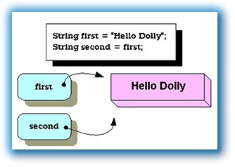
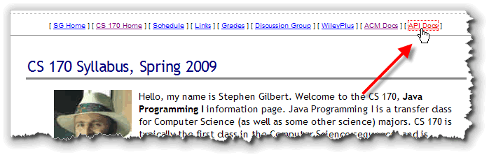
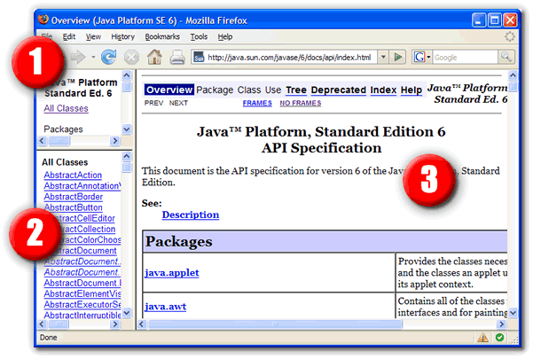
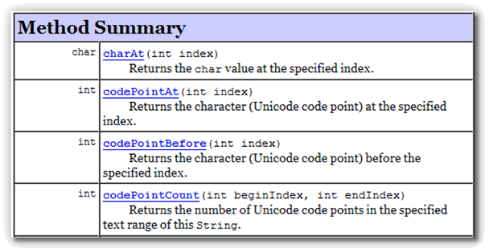
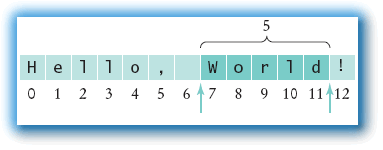

Even Gary Cooper, a
man of notoriously few words, was not reduced to speaking in
single characters. Most communication requires groups
of characters. In human speech we call these phrases and
sentences. In Java, we store phrases and sentences in
Strings.
In Unit 2, you met the String
class and worked with literals, escape sequences, output,
and concatenation. In this lesson, (and in Chapter 4 of
your text), we'll take a look at the methods
available to String objects. But first,
a little review.
In Java, a String is:
an immutable sequence of 0..n characters.
There are two things to notice about this definition that
makes Java String objects different than characters,
and different than strings in other programming languages.
- First, Java strings are immutable or constant.
Just as the character literal 'A' cannot suddenly morph
into 'B', so a
Stringobject, once created, can never be changed. It will always be composed of exactly the same sequence of characters.This is much different than C or Pascal, where you can change the individual characters that a string contains. Java has the
StringBufferclass, which works more like strings in other languages. - Second, Java strings can hold 0..n characters,
while a
charvariable must always hold exactly one character.
Let's take a closer look at the nature of the String
class.
Object or Primitive?
Because Java has a strong syntactical resemblence to
the C programming language, programmers often expect Java
String objects to act like "null-terminated arrays of
char", which is what strings are in C.
Java's String objects don't act like that at all!
In fact, Java Strings act a little bit like objects,
(but with some unusual features), and a little bit like primitive types.
String objects, for instance, are the only
object type that allows you to initialize them using
literals, without using the new operator.
Furthermore, unlike the other object types, String
objects can be manipulated with several different
operators.

Strings are not primitive, or fundamental
types, however. Unlike primitive types, String
variables hold references to Strings,
not the actual character values. That means that two
String variables can refer to the same,
actual String object like that shown
in the screenshot to the right.
As you can imagine, if one of the String variables
shown here were allowed to change the contents of the
String object, "Hello Dolly", it would
have a serious impact on the other. That's the reason that
String objects are immutable in Java.
Which is not to say that you can't manipulate a String.
Unlike the numeric and character primitives, the
String has a rich variety of methods that can be
used to control them; they are not restricted to operator
manipulation. To look up those methods, you'll use the
online JavaDoc documentation system, which you'll
learn how to use shortly.
String Literals
You'll recall from Unit 2 that you to
initialize a String variable using a literal,
just form your String using regular characters,
and enclose the whole thing in double quotes, like this:
String greeting = "G'day Mate!";
Note that you don't have to use the escape character with the
single quote, when the single quote is used inside
a String literal.
An embedded escape sequence inside a String will
be expanded when the characters are stored. In a Unicode enabled
environment, for instance, you could write:
String message = "\u00BC is \u00BD of \u00BD";
// Says "¼ is ½ of ½"
The null String
A String variable that points to "nothing" is
called the null String. You cannot send
any messages to a null String or apply
any operations to a null String, except
for the assignment operator.
Here are two field definitions that illustrate the null
String:
String s1; // Not inititialized; value is null
String s2 = null;
In the first case, the String s1 is not
assigned a value, so it is given the value null by
default. In the second example, the special object constant
value null is assigned to the String
s2.
Note that if the String
s1 is a local variable, Java won't
compile your code if you attempt to use the variable. If
s1 were an instance or class variable, though,
(which we'll be covering later), Java wouldn't
prevent you from using the variable, but a runtime
error would occur when you used it, just as it would
for the variable s2.
The Empty String
A null String does not refer to anything.
The empty String, in contrast, refers to
a valid String object, one that contains zero
characters. Unlike the null String, the
empty String responds to messages and may be used
in String expressions.
To create an empty String you use a pair of
adjacent double-quotes with no intervening spaces like this:
String emptyString = "";
String Operations
Although Strings are really reference types,
like other objects, there are also have several operators
that act upon String operands.
When used with Strings, the "plus sign" (+) acts to
"paste" two Strings together to form a new
String, a process called concatenation,
(as you saw in previous units.)
In addition, though, the shorthand operator (+=)
also performs concatenation when its left-hand operand is a
String variable.
Here are some examples of String concatenation:
String s1 = "How";
String s2 = "now";
String s3 = "cow?";
String s4 = s1 + " " + s2;
s4 += " brown " + s3;
Note that you can concatenate both variables and
String literals. You can use the += operator only
when the value on the left is a String
variable, as in the last line.
String Methods and the JavaDocs
There's an old saying, you've probably heard a hundred times:
Give a man a fish and you feed him for a day. Teach a man to fish, and you feed him for his life.
Programming is a lot like that. Learning about
the Math and String classes is
not nearly as important as learning how to learn about
the Math and String classes.
In Java, you can learn about all the Java classes by using the online Java Documentation, often called the JavaDocs after the program which generates the HTML help files from comments embedded in the Java source code.
In this lesson, you'll learn how to get to the docs from the Web, how to search for the class you want to find, and how to interpret the documentation that you find there.
Locating the Documentation
To find the documentation for any of the Java classes, you can use your Web browser to access the online version at Sun. The online docs are always available at:
http://java.sun.com/javase/6/docs/api/index.html
Of course, sometimes it's hard to remember something like that, so
I've placed a link to the Java API docs on the class syllabus page.
You'll find the link in the upper-right corner; it should look
something like this.

If you're working in Eclipse and you don't want to visit the CS 170 home page, Eclipse will open the JavaDocs on the Sun site in your browser. Just:
- Expand the JRE System Library node in the Package Explorer.
- Select the file rt.jar that appears there.
- From the Navigate menu, choose Open External Javadoc and Eclipse will launch your browser.
If you aren't connected to the Internet, or, if you have a slow connection, you might want to read the documentation on your local machine. Visit the Sun site (http://java.sun.com) and download the Java documentation package and unzip it. Then, simply double-click the file index.html, located in the docs/api directory.
The JavaDoc API Window
Once you open the API documentaion, you'll start at the main
JavaDoc window, which you can see below. The
JavaDoc interface consists of three frames:

- First, the package browser in the upper left-hand corner allows you to select individual packages, so that only the classes in that package appear inside the class browser window below it. You can also click individual packages by selecting the links in the center frame. I usually close this frame by sliding the bottom bar up to the top, since I don't find it very useful to restrict my searching to a single package. When you first arrive, the package browser is set to display all classes.
- Second, the class browser in the lower-left corner consists of hyperlinks to all of the classes and interfaces in the currently selected package. Since these are in alphabetical order, it's a simple matter to scroll down and find the class you want.
- Third, the content pane in the center is where you'll find the documentation for the class you're interested in.
Let's look at the documentation for a class we've already met, the
String class.
Scroll thorugh the class list (in the lower-left frame) until you
find the link, as hown here (1), and click it:
 The class documentation is displayed in the
right-hand (larger) frame (marked 2). Let's take a look
at what you'll find there.
The class documentation is displayed in the
right-hand (larger) frame (marked 2). Let's take a look
at what you'll find there.
The Contents Window
Finally, some meaningful information! The JavaDoc for each class is broken up into several sections. Most of these won't make a lot of sense to you until you've learned a little more about Java. For right now, we're only concerned about three sections:
- Introduction and Class Summary
- Method Summary
- Method Details
Let's start with the introduction.
Introduction and Class Summary
At the very top of every class documentation page, there is an
introduction to help you get oriented. The introduction starts
with the class name (class String. in the picture)
and is followed by a visual "ladder" of inheritance.
 This is important because some methods may be inherited from a "parent"
or "super" class, so this gives you a place to start looking.
This is important because some methods may be inherited from a "parent"
or "super" class, so this gives you a place to start looking.
Right above the class name is the name of the package
that contains the class; in the case of the String class,
that's the java.lang package. Remember that the java.lang
package is automatically imported into every Java program.
For most other classes, though, you'll use the package name you find here
when you write your import statements.
Right below the inheritance hierarchy, you'll normally find more introductory
information. In the picture, you'll see the very beginning of the introductory
section for the String class. For most classes you'll find:
- A simple explanation that tells you what the class does and, often more important, why it exists.
- A simple code example. For some of the more complex classes, the explanation is not enough; a code example is "worth its weight in gold", (to worry an old cliche).
- A picture of the component for the basic visual classes.
It never hurts to revisit this introductory material from time to time, especially when new versions of the SDK are released.
The Method Summary
Scroll down through the documentation until you come to the section titled Method Summary as shown here:

Methods, (you'll remember from our discussion of theSystem.out
object), correspond to the messages that an object responds to.
In that sense, they are similar to the functions you've been using.
The big difference, is that the methods in the String class
are each "attached" to a particular String object, and so
the code you use to call the method is slightly different than the
code you'd use to call a function.
The Java documentation provides the tools you'll need to make yourself
understood by any Java object. The "dictionary" of commands that any
given object understands is listed in its method summary. These are the
things that you can tell a String object to do or to calculate.
As you can see here, a String
object "knows how to do" more than sixty different things; that is, the
String class contains more that sixty methods.
In fact, the String
class also inherits eight methods from its parent class,
Object, so the actual number of things it can do
is closer to seventy.
Deciphering the Docs
Making sense of the JavaDocs is one of the most important
things you can do at this point, so
scroll on down through the method summary and let's take a closer look
at two different String examples: the toUpperCase()
method and the lastIndexOf() method. When you've found them,
and let's get to decoding:

The left-hand column (1) shows the return type of the method.
If you see the word void here, then the method just
carries out an action, it doesn't calculate and return a value. If anything
else appears, the method is a function that calculates and returns
a value.
As you can see, the toUpperCase() method returns a new String,
while the lastIndexOf() method returns an int.
Ignore, for now, the words
abstract or static that appear
in many places in this column. These are advanced features
that we'll cover later in the semester.
The Signature
In the right-hand column, the lines that reads:
toUpperCase()
lastIndexOf(String str, int fromIndex)
In the CS world, the words argument and parameter are often interchanged. Your book usually uses the term parameter, so I've tried to change my lessons to match. Sometimes, though, you'll see the word argument slip through.
If you're paying attention, you've probably noticed that the signature looks very much like the method header used when the class is defined. The method signature is important, because it tells you how to invoke or call the method, mostly by letting you know the kinds of additional information you need to supply.
Actual Parameters
In the parameter list, the type and name of each piece
of information is listed; each parameter is separated from its
neigbors by a comma.
As you can see in the picture, there are no parameters defined for
the toUpperCase() method, so you don't need to supply
any additional information when you call it. The lastIndexOf()
method, though, has two parameters defined.
The first is a String named str and the second
is an int named fromIndex.
That means that when you call the lastIndexOf() method,
inside of the parentheses you have to supply a String value,
(either a variable or text between double quotes), followed by an integer
value, (either a variable or a literal whole number like 17). You'll
separate the two values (which are called actual parameters), with a comma.
Just to recap:
- If you see a parameter with a type of
String, put "text between double quotes" in that position. - If you see a parameter with a type of
int, put a whole number in that position. - If you see a parameter with a type of
double, put a real number (that is, a number with a decimal point) in that position
The last portion of the method summary documenation is a simple, one-line explanation of the method's behavior. You can get a more complete explanation by clicking the name of the method.
Using the Documentation
To use the method, you simply follow the instructions from
Unit 2 when we discussed sending messages to the
System.out object. For each of the
arguments listed in the signature, replace it with a
value of that type.
Given the documenation of the two methods above,
here's how you'd use these two methods (along with the readLine()
method in the ConsoleProgram class:
String yourName = readLine("Enter your name like this (Last, First MI.):");
String upperName = yourName.toUpperCase(); // No parameters
int lastSpace = yourName.lastIndexOf(" ", 0); // Start looking at character 0
Well, that's the basics. Now let's look at some of the String
methods you'll use most often.
String Methods
When you first met the String class, you
saw that Strings had some of the characteristics of
primitives and some characteristics of objects. One of the ways
in which Strings are like objects is that the
String class has a rich set of methods you can use
to manipulate String objects.
Let's look at a few.
String Length
If a String is a sequence of 0 to n
characters, how do you find out what n is?
It's actually pretty easy; you just ask the String
object how long it is, by calling its length()
method.
You don't have to supply any arguments when you call the
length() method. The returned value is an
int. Here are a couple examples:
1: String s1 = "Conch", s2 = "fritter", s3 = "", s4;
2: int len1 = s1.length();
3: println("s2 has " + s2.length() + " characters");
4: s3.length();
5: println("s4.length() is " + s4.length());
Analysis
- Line 1 creates four
Stringvariables,s1,s2,s3, ands4. The first three are initialized using literals. - Line 2 sends the
length()message tos1and stores the "answer" in theintvariablelen1. After this line runs,len1will contain 5, because "Conch" contains 5 characters. - Line 3 calls the
length()method using the variables2. This time, instead of storing the result in a variable, theintvalue 7 (the number of characters in "fritter") is converted to aStringand combined with several literals, using concatenation. Instead of saving the returned value, we just use it directly. - Line 4 calls the
length()method, using the variables3. TheString s2contains 0 characters; it's the empty string. While this line compiles and runs, it actually contains a logic error. Thelength()method returns a value, but in Line 4, we simply ignore that value, using it like a simple action-producing method. The line, effectively, does nothing. - Line 5 attempts to send the
length()message to theStringobject referenced by the variables4. Sinces4was never intialized, though, Java won't compile your code, ifs1is a local variable.
Retriving Characters
 If you were to "peer inside" the
If you were to "peer inside" the String object
referred to by the variable s1, you'd see that
the individual characters were stored right next to each
other in memory. Because of this, Java lets you access
the individual characters using an index value.
Most other languages use a similar scheme, but some languages
start their counting at 1, (VB and Pascal), and others
start their counting at 0, (Java and C++).
As you can see from the picture shown here, the first
character in a Java String, like the capital
"C" in "Conch", is associated with the index position 0.
To retrieve the individual characters that make up a
String, use the charAt(int position)
method. Pass your variable the index position of the character
you want, and the charAt() method return the
character itself.
There ae two things you should note. First,
the value returned from charAt() is a char,
not a 1-character String. If you want to use the
returned value with other strings, you'll have to use concatenation
to convert it back into a String object.
Second, the last character in any Java String will
always be a position length() - 1.
Here are a couple examples. Assume that s1 and
s2 from the previous example are still in scope:
1: char firstChar = s1.charAt(0);
2: char lastChar = s2.charAt(s2.length()-1);
3: char whatChar = s3.charAt(0);
4: char thatChar = "What".charAt(0);
Analysis
- Line 1 stores the character 'C' in the variable
firstChar. - Line 2 uses
charAt()to retrieve the last character in "fritters", and then stores it in thecharvariablelastChar. Note thatlength()-1is used as the index value passed tocharAt(). - Line 3 causes a runtime error since the empty
Stringdoes not have a character at position 0. - Line 4 stores the character 'W' in the variable
thatChar. Note that you can call methods usingStringliterals as the receiver.
Searching Methods
The charAt() method is useful when you know
the position of a particular value. Often, though, with
user-supplied data, you'll need to search through the
string to find the value you want.
The String class has several methods that will
let you search for specific
values, or, the postitions of specific values. Here are some
interesting ones:
indexOf(arg), lastIndexOf(arg)
There are several versions of each of these
methods, which search the String on the left,
(the one calling the method), for the value on the right,
(the parameter passed to the method). The parameter can
be either a character or a String.
The indexOf() methods start searching at the
beginning of the String, and the
lastIndexOf() methods start searching at the
end
of the String. Both methods return the index
position, measured from the beginning of the string,
where the searched-for value was found. Both methods also
return -1 if the character or String searched for is
not found.
Here are some examples:
1: String s1 = "Abadabadoo";
2: int p1 = s1.indexOf("daba"); // 3
3: int p2 = s1.indexOf('o'); // 8
4: int p3 = s1.lastIndexOf('o'); // 9
5: int p4 = s1.indexOf("doom"); // -1
Analysis
- Line 1 stores the address of the literal "Abadabadoo" in the variable
s1. - Line 2 uses
indexOf()to retrieve the index position of the word"daba"contained insides1. Since the first character is at position 0, you can see that the phrase starts at position 3 which is stored in theintvariablep1. Lin3 3 also uses the - Line 4 also searches for the character 'o', but this time a
version of the
lastIndexOf()method is used. As its name suggests, this method starts searching from the end of theStringuntil it finds a match. Since it finds the character 'o' immediately at the end of the string, it returns its position, 9, which is stored in the variablep3. - Finally, Line 5 searches the
Abadabadoofor the word "doom". Since doom occurs nowhere in the string, the variablep4is given the value -1.
indexOf() method, only this time the
method searches for a char parameter, not a String.
"Abadabadoo" contains the character 'o' twice, in positions 8 and 9. The
indexOf() method returns the position of the first
match it finds.
This is actually a different version of the indexOf() method
than that used in Line 2, since each method has to specify what kind of parameters
it requires. That means a method cannot be written so that a user can provide
either a String or a char. To get the same effect,
programmers can write different versions of the same method, using the
same name. Different versions of a method, using the same name but requiring
different parameters, are known as overloaded methods.
Two more searching methods that will prove useful once you
learn about selection, (since they return boolean
values), are:
endsWith(suffix), startsWith(prefix)
Both of these methods return true if the
String on the left, (the String
calling the method), ends with or starts with the
String on the right, (the String
passed as an argument).
"Junk.java".endsWith(".java"); // true
"testFile.txt".startsWith("test"); // true
Builder Methods
Because Strings are immutable, the Java
String class has no mutator methods. In
place of these, however, there are a number of "builder"
methods that produce a new String by
tranforming an existing String.
When you use any of these transforming builder methods, you have
to remember to save the results using a String
variable.
Here are some of the methods you'll use most often:
toUpperCase(), toLowerCase()
Returns the String on the left, (the one calling
the method), translated into either upper or lower case.
String upperPet = "pet".toUpperCase(); // "PET"
String lowerPet = "Pet".toLowerCase(); // "pet"
upperPet.toLowerCase(); // logical error
The first two lines in this example call a transforming
method and store the results in a new variable. The last line shows
a common logic error; the programmer thought the code was converting
upperPet to lowercase, but instead it creates a
new String object and then simply abandons the
new object altogether. The variable upperPet is
not modified.
replace(char a, char b)
Returns a String with all occurances of character
a replaced by character b, not just the first occurance.
String mod = "Mom".replace('m', 'd'); // Mod
String bad = "Dad".replace('D', 'B'); // Bad
Note that prior to Java 5 there was no
replace method for String parameters.
Java 5 contains a version of replace() that works on
classes implementing the CharSequence interface,
which the String class does. The bottom line? You can
use replace with String arguments
in Java 5, but if you want your code to work in 1.4, use
replaceAll().
substring(start), substring(start, end)
This method, which has two overloaded versions,
returns a portion of the String on the left.
The returned String starts with the element
passed as start, with the first element being 0.
The second version returns the portion of the String
starting (and including) position start, up to, and
excluding, position end.
1: String s1 = "Hello, World!";
2: String s2 = s1.substring(7); // World!
3: String s3 = s1.substring(7, 12); // World
Analysis

Line 1 creates theStringvariables1and assigns it to the literal "Hello World!".- Line 2 uses the
substring()method to extract the portion ofs1starting with the character at position 7. - Line 3 uses an overloaded version of
substring()to extract the portion ofs1starting at position 7, and going up to, but not including, the character at position 12.
The fact that you need to supply two index values is a little awkward. One nice thing, though, is that you can easily use the two index values to compute the length of the substring, by subtracting the starting index from the ending index. If you want to extract a substring of a particular size, just do it like this:
String s4 = s1.substring(7, 7+5); // World
Coming Up ...
In this lesson you learned how to use the Java Documentation
and then learned how to find and work with some of the methods
from the String class.
In the next lesson, you'll learn how to convert between numbers
and Strings and how to nicely format your
numeric output.